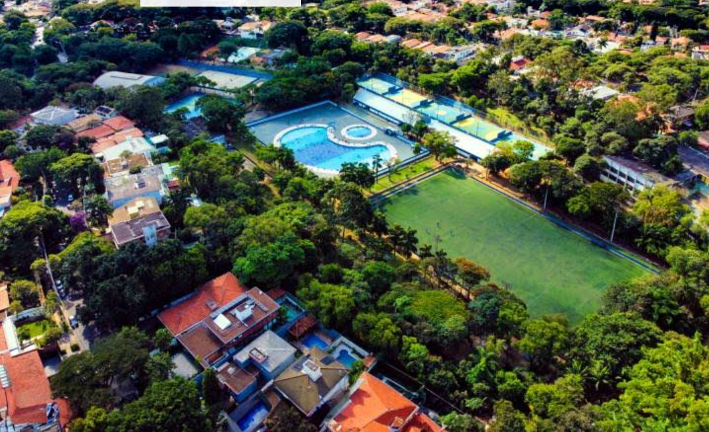

Clube Edson Arantes do Nascimento (Pelezão)

Eu conheço e frequento o clube Edson Arantes do Nascimento, vulgarmente conhecido como Pelezão. Ele é um clube que tem diversas quadras para diferentes esportes, como vôlei, vôlei de areia, futebol, futsal, etc. O clube também conta com uma piscina, que você pode levar toda a sua família para se refrescar.
Nele, costumo jogar nas suas quadras de vôlei, onde conheço pessoas novas, jogo com conhecidos e me divirto muito. Normalmente, eu passo o dia inteiro lá, voltando para casa próximo das 18h.
Ir para o site do clube